sector54 supernovae (17 total)
Each figure has three panels. The top panel shows the transient light curve, the middle panel shows the local background (estimated in an annulus), and the bottom panel shows a "background-model corrected" light curve. Details about the background model are in the README.
The vertical red line marks the time of discovery reported to TNS. Other useful metadata from TNS is in the figure title.
Note that the top and bottom panel are in magnitudes, while the middle panel is in differential flux units. The magnitudes are calibrated to the flux in the reference image used for image subtraction. Thus, flux from the host galaxy is included in these magnitudes.
3-sigma upper limits are plotted as triangles with no errorbars. A typical limiting magnitude is 19.6 in 30 minutes or 18.4 in 200 seconds (for low backgrounds).
The links allow you to download the light curve data as a text file.
More details in the README.
2022pjs
 2022qmk
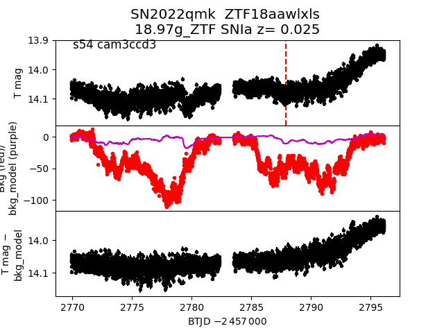
2022pib
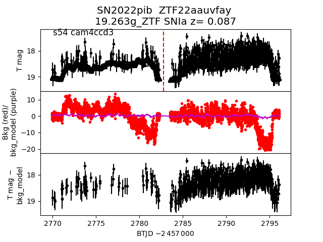
2022oyp
2022qmk
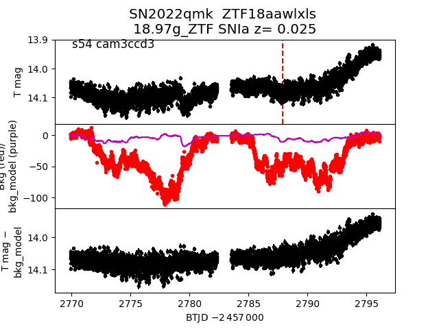
2022pib
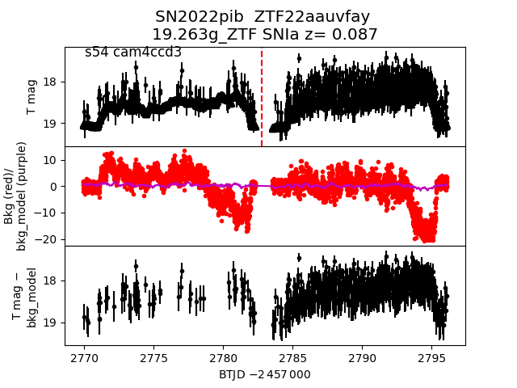
2022oyp
 2022oqx
2022oqx
 2022qes
2022qes
 2022osg
2022osg
 2022qdx
2022qdx
 2022pja
2022pja
 2022prr
2022prr
 2022oxd
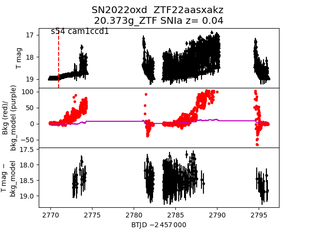
2022qzx
2022oxd
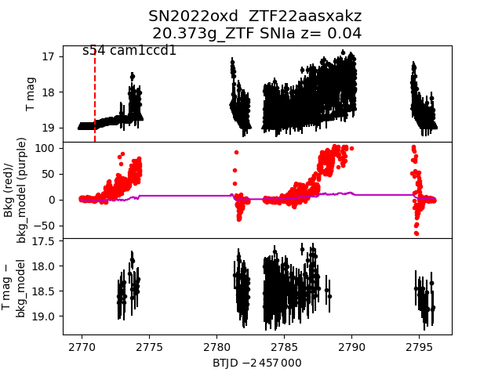
2022qzx
 2022qlo
2022qlo
 2022prd
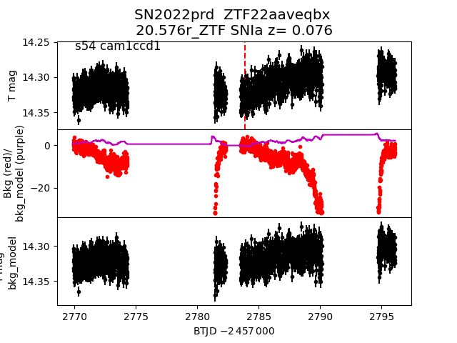
2022pjr
2022prd
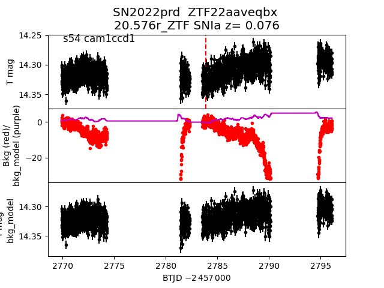
2022pjr
 2022orr
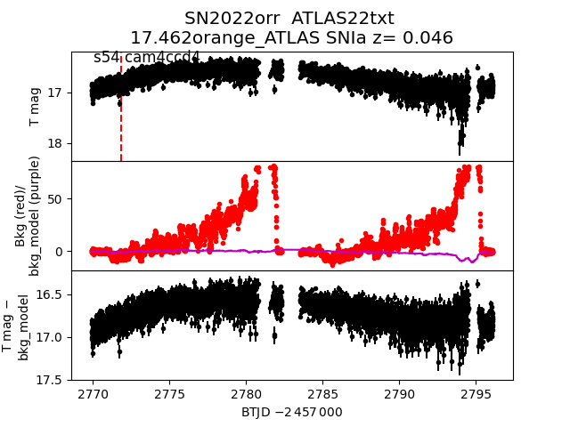
2022ppl
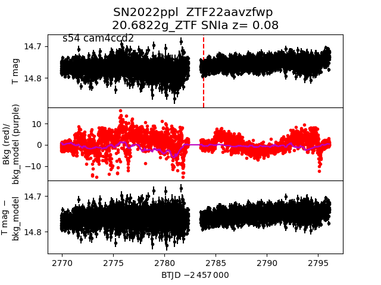
2022orr
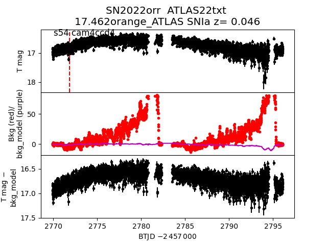
2022ppl
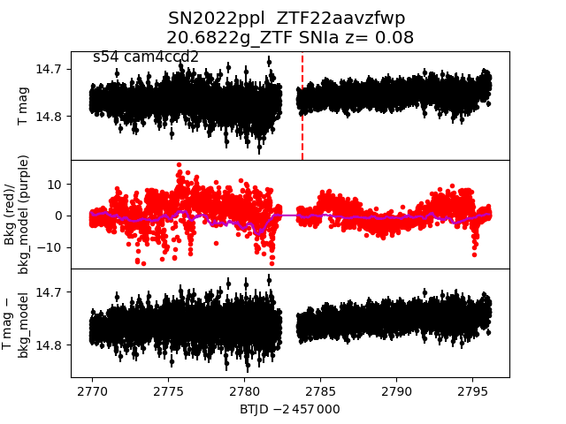